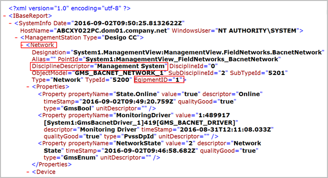
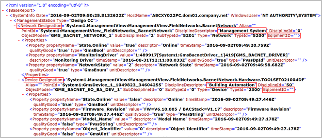
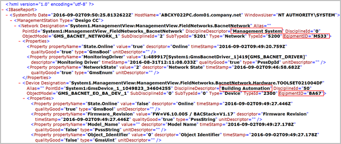

Equipment IDs in the IBase Report
If no equipment ID is configured, the IBase report generated contains, by default, the Equip ID – Default. If the discipline specific equipment IDs are configured (for example, for the discipline Management System, if you have set the Equip. ID – Management System as 1, the generated IBase report displays the configured equipment ID for that discipline.
For related instructions see Set the Equipment IDs for IBase Report.


